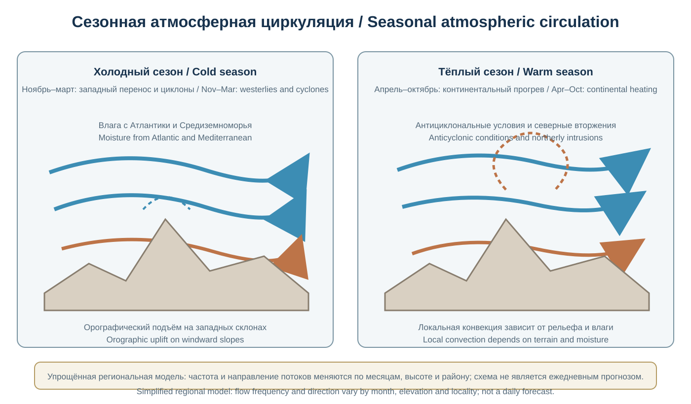
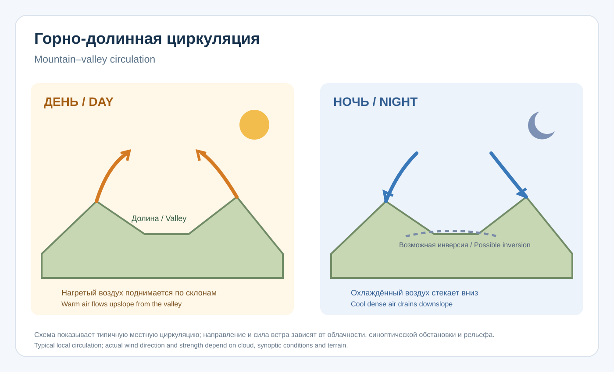
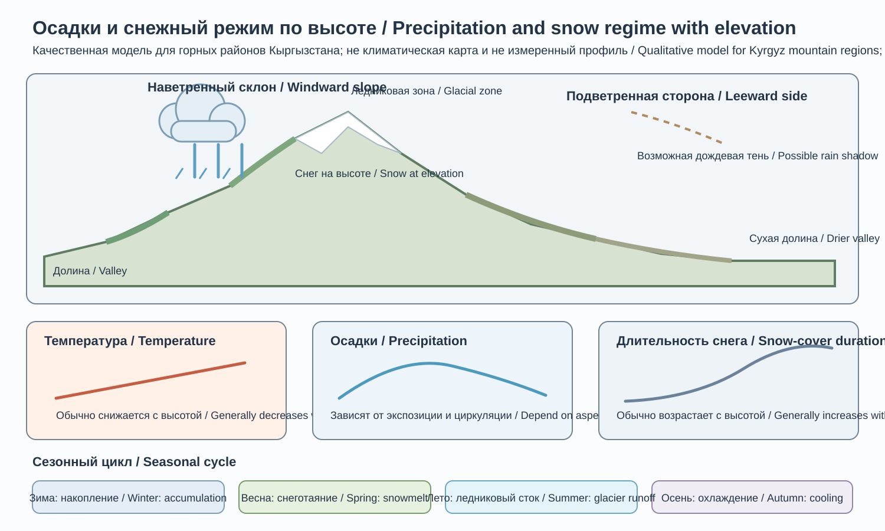
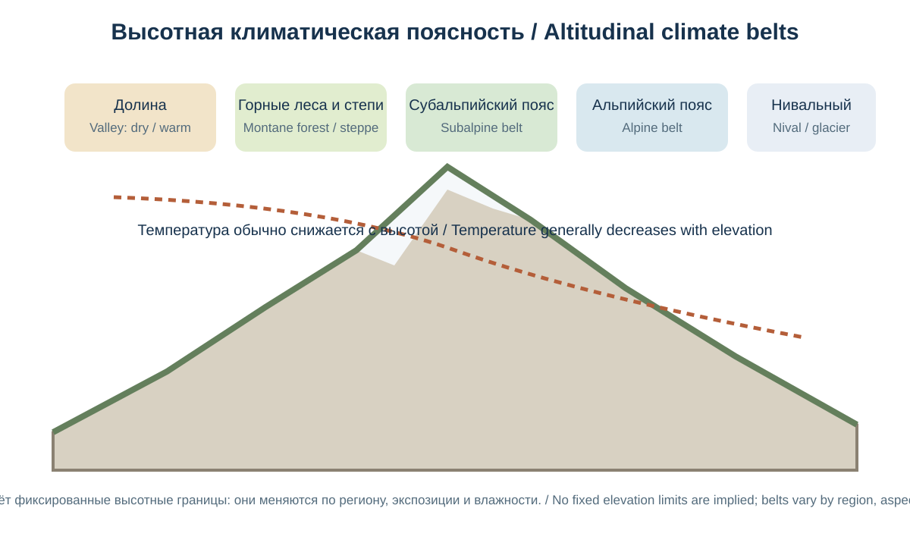
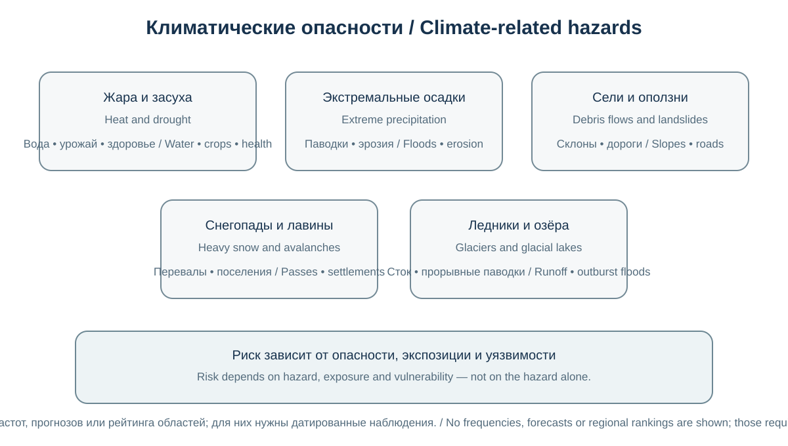
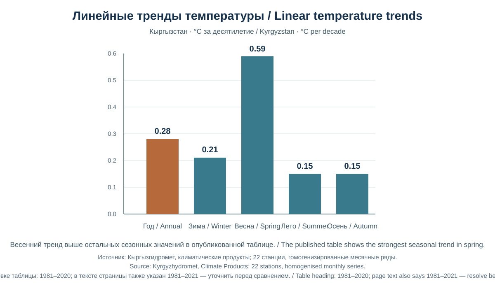

Глава 19. Климат и высотная поясность Кыргызстана
Chapter 19. Climate and Altitudinal Zonation of Kyrgyzstan
Часть IV. Кыргызстан — природная география / Part IV. Kyrgyzstan — Physical Geography
Научно-образовательный атлас / Scientific and Educational Atlas
Цели главыChapter objectives
Глава раскрывает климатическую систему Кыргызстана как результат взаимодействия широтного положения, континентальности, циркуляции атмосферы, сложного горного рельефа и высотной поясности. Особое внимание уделено пространственным контрастам температуры и осадков, местным ветрам, сезонности, климатическим опасностям и наблюдаемому потеплению.
После изучения главы читатель сможет: - объяснять главные климатообразующие факторы Кыргызстана; - различать региональные климатические типы и высотные климатические пояса; - интерпретировать сезонный ход температуры и осадков; - объяснять орографическое усиление осадков и дождевую тень; - анализировать климатические риски для сельского хозяйства, водных ресурсов, энергетики и населения; - отличать климатическую норму от отдельного погодного события и климатического тренда.
This chapter examines Kyrgyzstan’s climate as the outcome of latitude, continentality, atmospheric circulation, complex mountain topography and altitudinal zonation. It focuses on regional contrasts in temperature and precipitation, local winds, seasonality, climate hazards and observed warming.
19.1. Климатическое положение КыргызстанаKyrgyzstan’s Climatic Setting
Кыргызстан находится в глубине Евразийского материка, вдали от основных океанических источников влаги и вблизи аридных областей Центральной Азии. Такое положение способствует высокой континентальности: значительным сезонным и суточным колебаниям температуры, жаркому лету в долинах и холодной зиме во многих внутренних и высокогорных районах.
Однако континентальность не означает климатического однообразия. Тянь-Шань и Памиро-Алай создают сложную систему барьеров и высотных ступеней. На наветренных склонах воздушные массы поднимаются, охлаждаются и могут давать усиленные осадки; за хребтами формируются более сухие районы. В пределах небольшого расстояния могут соседствовать сухие предгорья, умеренно влажные горные склоны, холодные высокогорные долины и области современного оледенения.
19.1.1. Основные климатообразующие факторыMain Climate Controls
- Географическая широта. Солнечная радиация и продолжительность дня меняются по сезонам; летом приток энергии велик, зимой уменьшается.
- Континентальность. Удалённость от океанов ослабляет смягчающее влияние морских воздушных масс и усиливает сезонные температурные контрасты.
- Высота над уровнем моря. С подъёмом обычно понижается температура, изменяются давление, влажность, облачность, осадки и продолжительность вегетационного периода.
- Орография. Хребты направляют и блокируют воздушные потоки, усиливают подъём воздуха на наветренных склонах и создают дождевые тени.
- Атмосферная циркуляция. Западный перенос, циклоны, вторжения холодного воздуха и сухие континентальные массы определяют смену погодных режимов.
- Подстилающая поверхность. Снег, ледники, почвы, растительность, озёра и городская застройка влияют на отражение солнечной энергии, испарение и теплообмен.
- Локальная топография. Экспозиция склонов, форма долин, ширина котловин и высота перевалов создают микроклиматические различия.
Kyrgyzstan lies deep within Eurasia, far from major oceanic moisture sources and close to the arid regions of Central Asia. This setting favours a strongly continental climate: large seasonal and daily temperature ranges, hot summers in valleys and cold winters in many interior and high-mountain areas.
However, continentality does not mean climatic uniformity. The Tien Shan and Pamir-Alay form a complex system of barriers and elevation zones. Air masses rise and cool on windward slopes, which can enhance precipitation; drier areas form behind mountain ranges. Dry foothills, moderately humid mountain slopes, cold high-mountain valleys and modern glaciated areas may occur within short distances.
19.1.1 Main climate controls
- Latitude. Solar radiation and day length change with the seasons; incoming energy is high in summer and lower in winter.
- Continentality. Distance from the oceans reduces the moderating influence of maritime air masses and increases seasonal temperature contrasts.
- Elevation. Temperature usually decreases with height, while pressure, humidity, cloudiness, precipitation and growing-season length also change.
- Orography. Mountain ranges redirect and block airflow, enhance uplift on windward slopes and create rain shadows.
- Atmospheric circulation. Westerly flow, cyclones, cold-air incursions and dry continental air masses determine changes in weather regimes.
- Surface properties. Snow, glaciers, soils, vegetation, lakes and urban development affect solar reflection, evaporation and heat exchange.
- Local topography. Slope aspect, valley shape, basin width and pass elevation create microclimatic differences.
19.2. Атмосферная циркуляция и сезонностьAtmospheric Circulation and Seasonality

Упрощённая региональная модель, а не ежедневный прогноз; циркуляция и осадки меняются по сезону, высоте и району.Simplified regional model, not a daily forecast; circulation and precipitation vary by season, elevation and locality.
В течение года над Центральной Азией взаимодействуют западный перенос умеренных широт, континентальные воздушные массы, циклоны и антициклональные поля. Их относительная роль меняется по сезонам и годам.
Зимой в котловинах и долинах возможны устойчивые холодные периоды, температурные инверсии и застой воздуха. При вторжениях холодных континентальных масс температура резко понижается. Циклонические процессы с юго-запада могут приносить осадки, особенно на западные и юго-западные склоны.
Весной усиливается изменчивость погоды. Проходящие циклоны и фронты могут приносить осадки, резкие похолодания, снег в горах и быстрые переходы к тёплой погоде. Весенний максимум осадков характерен для ряда предгорных и долинных районов, хотя сезонный режим сильно различается по территории.
Летом в низких и средневысотных долинах часто устанавливается жаркая и сухая погода. В горах дневной прогрев способствует конвекции, локальным ливням и грозам. В высокогорье лето короткое и прохладное; снегопады возможны даже в тёплый сезон.
Осенью постепенно усиливаются процессы охлаждения, возрастает вероятность ранних снегопадов в горах, а в отдельных долинах сохраняется сухая и относительно тёплая погода. Переход к зиме зависит от высоты и экспозиции.
Throughout the year, Central Asia is influenced by the interaction of mid-latitude westerlies, continental air masses, cyclones and anticyclonic systems. Their relative importance changes by season and from year to year.
Winter. Persistent cold periods, temperature inversions and stagnant air may occur in basins and valleys. Cold continental air incursions can cause sharp temperature drops. Cyclonic systems from the south-west may bring precipitation, especially to western and south-western slopes.
Spring. Weather becomes more variable. Passing cyclones and fronts may bring precipitation, sudden cold spells, mountain snowfall and rapid transitions to warmer conditions. A spring precipitation maximum occurs in a number of foothill and valley areas, although the seasonal pattern differs greatly across the country.
Summer. Hot and dry weather is common in low and middle-elevation valleys. Daytime heating in the mountains promotes convection, local showers and thunderstorms. Summer is short and cool at high elevations, where snowfall may occur even during the warm season.
Autumn. Cooling gradually becomes more pronounced, and early snowfall becomes more likely in the mountains, while some valleys remain dry and relatively warm. The transition to winter depends on elevation and slope aspect.
19.3. Температурный режим и высотный градиентTemperature Regime and Vertical Gradient
Температура воздуха в целом понижается с высотой, но реальная скорость изменения зависит от сезона, влажности, облачности, ветра, экспозиции и состояния поверхности. Для свободной атмосферы часто используют ориентировочный средний вертикальный градиент около 6,5 °C на 1 000 м, однако его нельзя механически применять к любому склону или метеостанции.
В ясные тихие ночи холодный плотный воздух стекает по склонам и накапливается в понижениях. Так формируются температурные инверсии: в приземном слое долина может быть холоднее расположенного выше склона. Инверсии особенно важны зимой, поскольку способствуют накоплению загрязняющих веществ в котловинах и городах.
Влияние экспозиции также существенно. Южные склоны Северного полушария обычно получают больше прямой солнечной радиации, чем северные склоны сопоставимой крутизны. Поэтому различаются сроки снеготаяния, влажность почв, растительность и продолжительность вегетации.
19.3.1. Климатические контрасты по высоте
| Высотная область | Общие температурные особенности | Климатическое значение |
|---|---|---|
| Низкие долины и предгорья | Жаркое лето; зима от мягкой до холодной в зависимости от района и инверсий | Основная зона интенсивного земледелия и расселения |
| Среднегорья | Более прохладное лето, холоднее зима, увеличивается роль снегового покрова | Пастбища, лесные и луговые пояса, водосборы |
| Высокогорные долины и плато | Короткое прохладное лето, длительная холодная зима | Сезонное пастбищное использование, ограниченный вегетационный период |
| Нивально-ледниковые высоты | Отрицательные температуры значительную часть года, снег и лёд | Накопление снега и льда, питание высокогорных водосборов |
Air temperature generally decreases with elevation, but the actual rate depends on season, humidity, cloudiness, wind, slope aspect and surface conditions. A commonly used reference value for the free atmosphere is an average vertical lapse rate of about 6.5 °C per 1,000 m. It should not be applied mechanically to every slope or weather station.
On clear, calm nights, cold dense air flows downslope and accumulates in depressions. Temperature inversions can then develop: the valley floor may be colder than a slope at a higher elevation. Inversions are especially important in winter because they can contribute to the accumulation of air pollutants in basins and cities.
Slope aspect also matters. In the Northern Hemisphere, south-facing slopes usually receive more direct solar radiation than north-facing slopes of similar steepness. This affects snowmelt timing, soil moisture, vegetation and the length of the growing season.
19.3.1 Temperature contrasts by elevation
| Elevation zone | General temperature characteristics | Climatic significance |
|---|---|---|
| Low valleys and foothills | Hot summers; winters range from mild to cold depending on location and inversions | Main zone of intensive agriculture and settlement |
| Middle mountains | Cooler summers, colder winters and a greater role for seasonal snow cover | Pastures, forest and meadow belts, and catchment areas |
| High-mountain valleys and plateaus | Short cool summers and long cold winters | Seasonal grazing and a limited growing season |
| Nival and glacial elevations | Sub-zero temperatures for much of the year, with persistent snow and ice | Accumulation of snow and ice and feeding of high-mountain catchments |
19.4. Осадки и орографический эффектPrecipitation and Orographic Effects
Распределение осадков в Кыргызстане крайне неоднородно. На него влияют направление воздушного потока, высота и ориентация хребтов, положение относительно наветренной или подветренной стороны, сезон и тип осадков.
При подъёме влажного воздуха по склону он охлаждается, водяной пар конденсируется, и вероятность осадков возрастает. За горным барьером воздух может опускаться и прогреваться, что способствует уменьшению относительной влажности. Так формируется орографическая тень.
В целом более влажные условия характерны для ряда западных и юго-западных горных склонов, тогда как некоторые внутренние котловины и высокогорные сырты отличаются засушливостью. Но это обобщение не заменяет локальных наблюдений: два соседних бассейна могут иметь разный режим осадков.
Среднее значение осадков по стране зависит от периода климатической нормы и пространственного набора данных. Всемирный банк приводит среднюю территориальную оценку около 378 мм в год для климатической нормы 1991–2020 годов, при этом региональные значения могут быть существенно ниже или выше. Это среднее нельзя трактовать как норму для каждого района или метеостанции.
19.4.1. Сезонность осадков
В предгорьях и многих долинных районах существенная часть осадков приходится на холодный период и весну. В высокогорье значительная доля зимних осадков выпадает в виде снега, а летом возможны конвективные ливни и грозы. Для ледников важен не только общий объём осадков, но и соотношение твёрдых и жидких осадков, ветровой перенос снега, сублимация и летнее таяние.
19.4.2. Снеговой покров
Снежный покров формируется неравномерно. На его устойчивость влияют высота, экспозиция, ветер, температура и особенности рельефа. Ветер переносит снег с наветренных поверхностей и накапливает его в ложбинах и за гребнями, создавая локальные зоны повышенной лавинной опасности. В высокогорье снег может сохраняться круглый год, переходя в фирн и ледниковый лёд при благоприятном балансе накопления и таяния.
Precipitation is distributed very unevenly across Kyrgyzstan. Its pattern depends on airflow direction, the height and orientation of mountain ranges, whether a location is on a windward or leeward slope, the season and the type of precipitation.
As moist air rises along a slope, it cools and water vapour condenses, increasing the likelihood of precipitation. Behind a mountain barrier, air may descend and warm, reducing relative humidity. This creates an orographic rain shadow.
In general, wetter conditions occur on a number of western and south-western mountain slopes, while some interior basins and high-mountain syrts are relatively dry. This generalisation does not replace local observations: neighbouring catchments can have different precipitation regimes.
The national average depends on the climate-normal period and the spatial dataset. The World Bank reports an area-average estimate of about 378 mm per year for the 1991–2020 climate normal, while regional values may be substantially lower or higher. This average should not be treated as the normal for every district or weather station.
19.4.1 Seasonal precipitation
In foothills and many valley areas, a substantial share of precipitation falls during the cold season and spring. In high mountains, much of the winter precipitation falls as snow, while summer may bring convective showers and thunderstorms. For glaciers, not only total precipitation but also the balance between solid and liquid precipitation, wind redistribution of snow, sublimation and summer melt are important.
19.4.2 Snow cover
Snow cover forms unevenly. Its persistence depends on elevation, slope aspect, wind, temperature and local relief. Wind removes snow from exposed surfaces and deposits it in hollows and behind ridges, creating local areas of increased avalanche hazard. At high elevations, snow may persist throughout the year and gradually transform into firn and glacial ice when accumulation exceeds melt.
19.5. Региональные климатические различияRegional Climate Differences
19.5.1. Чуйская долина и северные предгорья
Для Чуйской долины характерны жаркое лето, холодная зима и выраженная сезонность осадков. Горные склоны к югу от долины получают иные количества осадков и имеют более прохладный режим, чем равнинные участки. Зимой возможны температурные инверсии и эпизоды ухудшения качества воздуха.
19.5.2. Таласская долина
Таласская долина окружена горными хребтами, которые влияют на циркуляцию и распределение осадков. Климат умеренно континентальный, с холодной зимой и тёплым летом; локальные условия зависят от высоты днища долины и открытости горных проходов.
19.5.3. Иссык-Кульская котловина
Озеро Иссык-Куль смягчает температурные условия прилегающих прибрежных территорий, хотя эффект неодинаков по всему побережью. Влияние озера сочетается с орографией Кунгей Ала-Тоо и Терскей Ала-Тоо, локальными ветрами и контрастом северного и южного берегов. Осадки и температура заметно меняются от побережья к горным склонам.
19.5.4. Внутренний Тянь-Шань
Высокогорные котловины и сырты Внутреннего Тянь-Шаня отличаются суровой зимой, коротким прохладным летом и большой амплитудой температур. На отдельных плато и в долинах возможны очень низкие зимние температуры, а период активной вегетации короток. Высота и удалённость от более влажных периферических районов усиливают климатическую суровость.
19.5.5. Нарынская и Ат-Башинская области
Для высоких долин Нарына и Ат-Башы характерны холодная зима и сравнительно прохладное лето. Различия между днищами долин, склонами и высокими плато значительны. Важную роль играют инверсии, направление долины и снежный режим.
19.5.6. Ферганская долина и юго-запад Кыргызстана
Юго-западные районы, включая кыргызскую часть Ферганской долины, отличаются более тёплым климатом. Лето часто жаркое и сухое, осадки во многих местах имеют выраженный зимне-весенний максимум. По мере подъёма в горы температура снижается, а на отдельных наветренных склонах осадки увеличиваются.
19.5.7. Алайская долина и Памиро-Алай
Алайская долина расположена высоко над уровнем моря и окружена крупными хребтами. Климат холоднее, чем в низменной Ферганской долине: лето короткое, зима продолжительная, а ветровые условия могут быть суровыми. На Заалайском хребте климат переходит к условиям высокогорного оледенения.
19.5.1. Chuy Valley and the northern foothills
The Chuy Valley has hot summers, cold winters and a pronounced seasonal pattern of precipitation. Mountain slopes south of the valley receive different amounts of precipitation and have a cooler climate than the plain. Temperature inversions and episodes of poor air quality may occur in winter.
19.5.2. Talas Valley
The Talas Valley is surrounded by mountain ranges that influence atmospheric circulation and the distribution of precipitation. Its climate is moderately continental, with cold winters and warm summers; local conditions depend on the elevation of the valley floor and the openness of mountain passes.
19.5.3. Issyk-Kul Basin
Lake Issyk-Kul moderates temperatures in nearby coastal areas, although the effect is not uniform around the entire shoreline. The lake's influence interacts with the topography of the Kungey Ala-Too and Terskey Ala-Too, local winds and contrasts between the northern and southern shores. Temperature and precipitation change markedly from the lakeshore to the mountain slopes.
19.5.4. Inner Tien Shan
The high basins and syrts of the Inner Tien Shan have severe winters, short cool summers and large temperature ranges. Very low winter temperatures may occur on some plateaus and in valleys, and the growing season is short. Elevation and distance from wetter peripheral areas add to the climatic severity.
19.5.5. Naryn and At-Bashy areas
The high valleys of Naryn and At-Bashy have cold winters and relatively cool summers. Conditions differ substantially between valley floors, slopes and high plateaus. Temperature inversions, valley orientation and snow conditions are important controls.
19.5.6. Fergana Valley and south-western Kyrgyzstan
The south-western areas, including the Kyrgyz part of the Fergana Valley, have a warmer climate. Summers are often hot and dry, while many locations have a pronounced winter–spring precipitation maximum. Temperature decreases with elevation, and precipitation increases on some windward slopes.
19.5.7. Alay Valley and the Pamir-Alay
The Alay Valley lies at high elevation and is surrounded by major mountain ranges. Its climate is colder than that of the lowland Fergana Valley: summers are short, winters are long, and wind conditions can be severe. The Trans-Alay Range transitions towards conditions of high-mountain glaciation.
19.6. Типы климата и классификацияClimate Types and Classification
Для описания климата применяются разные системы. Классификация Кёппена—Гейгера использует температурные и осадочные критерии и позволяет сопоставлять регионы мира. В Кыргызстане на картах могут выделяться холодные степные и пустынные типы, континентальные и влажные горные разновидности. Границы климатических классов зависят от периода наблюдений и исходного набора данных.
Физико-географическое районирование, в отличие от классификации Кёппена—Гейгера, учитывает рельеф, высотные пояса, сезонность и региональную циркуляцию. Поэтому для школьного и университетского атласа целесообразно показывать обе перспективы: карту климатических типов и карту региональных климатических районов.
Нельзя называть весь юго-запад страны «субтропическим» без оговорки. В некоторых классификациях отдельные низкие районы имеют переходные черты, но большая часть территории относится к климатам умеренных широт, а высокогорья обладают холодными горными и нивальными условиями.
Different systems are used to describe climate. The Köppen–Geiger classification uses temperature and precipitation criteria and allows comparisons among world regions. In Kyrgyzstan, maps may identify cold steppe and desert climates, continental types and humid mountain variants. The boundaries of climate classes depend on the observation period and the underlying dataset.
Unlike the Köppen–Geiger classification, physical-geographical regionalisation also considers relief, altitudinal belts, seasonality and regional atmospheric circulation. A school or university atlas should therefore show both perspectives where appropriate: a map of climate types and a map of regional climate areas.
The entire south-west of the country should not be labelled “subtropical” without qualification. Some low-lying areas have transitional features in certain classifications, but most of the country belongs to mid-latitude climates, while high mountains have cold mountain and nival conditions.
19.7. Местные ветры и горно-долинная циркуляцияLocal Winds and Mountain–Valley Circulation

Рисунок 19-H / Figure 19-H. Дневной долинный и ночной горный ветер; схема не заменяет локальные метеонаблюденияDaytime valley and nighttime mountain breezes; schematic, not a substitute for local observations.
В течение суток в горных районах часто меняется направление местного ветра. Днём нагретый воздух поднимается по склонам и долинам (долинный ветер), ночью охлаждённый воздух стекает вниз (горный ветер). Эти потоки могут влиять на распределение облаков, туманов, загрязняющих веществ и локальных осадков.
В отдельных котловинах и долинах возникают устойчивые местные ветры, связанные с перепадами давления, конфигурацией рельефа и прохождением воздушных масс через перевалы. Их названия и характеристики следует указывать только при наличии подтверждённых местных метеорологических данных.
Ветер усиливает испарение и иссушение почв, перераспределяет снег, влияет на ощущаемую температуру и может осложнять транспорт и альпинистские маршруты. На открытых высокогорных плато скорость ветра и его порывистость особенно важны для оценки условий пребывания людей и эксплуатации инфраструктуры.
Local wind direction often changes during the day in mountain regions. During the day, heated air rises along slopes and valleys, producing an upslope or valley breeze. At night, cooled air flows downslope, producing a mountain breeze. These flows can influence the distribution of clouds, fog, air pollutants and local precipitation.
Persistent local winds may develop in some basins and valleys due to pressure differences, terrain configuration and the passage of air masses through mountain passes. Their names and characteristics should be given only when supported by local meteorological observations.
Wind increases evaporation and soil drying, redistributes snow, affects perceived temperature and can complicate transport and mountaineering. Wind speed and gustiness are especially important on exposed high-mountain plateaus when assessing human safety and infrastructure operation.
19.8. Высотная климатическая поясностьAltitudinal Climatic Zonation

19-I. Авторская концептуальная схема дополняет 19-C: 19-C показывает смену растительно-климатических поясов, а 19-I — качественные зависимости температуры, осадков и длительности снежного покрова, а также сезонное накопление и таяние снега. Осадки не обязаны монотонно возрастать с высотой: важны экспозиция, циркуляция и дождевые тени. Численные значения и универсальные высотные границы не задаются.Original conceptual diagram complements 19-C: 19-C shows vegetation/climate belts, while 19-I shows qualitative relationships for temperature, precipitation and snow-cover duration, plus seasonal snow accumulation and melt. Precipitation does not necessarily increase monotonically with elevation; aspect, circulation and rain shadows matter. No numerical values or universal elevation thresholds are asserted.
EN: Elevation profile of climatic belts showing temperature, precipitation and snow regime; belt boundaries are approximate and regionally variable.

Оригинальная двуязычная концептуальная схема; высотные границы не фиксированы и меняются по региону, экспозиции и увлажнению.Original bilingual conceptual diagram; elevation limits are not fixed and vary by region, aspect and moisture.
Высотная поясность — закономерная смена климатических условий с высотой. В Кыргызстане она особенно выражена из-за значительных перепадов рельефа. При подъёме обычно снижается температура, изменяются количество и сезонность осадков, длительность снежного покрова и продолжительность периода с положительными температурами.
Высотные границы поясов не являются одинаковыми для всей страны. На них влияют широта, экспозиция, континентальность, наветренность, локальная циркуляция и форма долины. Южный склон и северный склон одного хребта могут иметь разные климатические условия на одинаковой абсолютной высоте.
19.8.1. Обобщённая схема поясов
| Условный пояс | Ориентировочное положение | Климатическая характеристика |
|---|---|---|
| Долинно-предгорный | Нижние долины и предгорья; высота сильно варьирует по регионам | Жаркое лето, осадки часто сезонны, зима от мягкой до холодной |
| Нижнегорный | Переход от предгорий к горным склонам | Более прохладное лето, усиление орографических осадков на наветренных склонах |
| Среднегорный | Средние высоты горных склонов | Умеренно прохладное лето, холодная зима, более длительный снежный сезон |
| Высокогорный | Высокие долины, плато и гребни | Короткое прохладное лето, долгая зима, частые заморозки |
| Субнивальный | Верхние склоны и гребни выше местного климатического снегового предела | Преобладание снега, льда, скал и осыпей |
| Нивально-ледниковый | Наиболее высокие участки гор | Многолетний снег и лёд, низкие температуры, сильные ветры |
19.8.2. Климатический снеговой предел и снеговая линия
Следует различать несколько понятий: - сезонная снеговая граница — высота, выше которой снег может сохраняться в определённый сезон; - климатическая снеговая линия — приближённая граница, связанная с многолетним балансом накопления и таяния снега; - линия равновесия ледника (ELA) — высота, на которой годовой баланс массы ледника близок к нулю в конкретный год или усреднённый период.
Эти линии не совпадают автоматически. Их высота зависит от экспозиции, осадков, ветрового переноса, облачности, радиации и формы ледникового бассейна.
Altitudinal zonation is the systematic change in climatic conditions with elevation. It is particularly pronounced in Kyrgyzstan because of the large differences in relief. As elevation increases, temperature generally decreases, while the amount and seasonality of precipitation, duration of snow cover and length of the period with above-freezing temperatures also change.
Elevation boundaries of climatic belts are not the same throughout the country. They are influenced by latitude, slope aspect, continentality, exposure to moist airflow, local circulation and valley shape. The north- and south-facing slopes of the same mountain range may have different climatic conditions at the same absolute elevation.
19.8.1 Generalised belt scheme
| Approximate belt | General position | Climatic characteristics |
|---|---|---|
| Valley and foothill | Lower valleys and foothills; elevation varies greatly among regions | Hot summers, often seasonal precipitation, winters ranging from mild to cold |
| Lower mountain | Transition from foothills to mountain slopes | Cooler summers; orographic precipitation increases on windward slopes |
| Middle mountain | Middle elevations on mountain slopes | Moderately cool summers, cold winters and a longer snow season |
| High mountain | High valleys, plateaus and ridges | Short cool summers, long winters and frequent frost |
| Subnival | Upper slopes and ridges above the local climatic snow limit | Snow, ice, bare rock and scree are widespread |
| Nival-glacial | Highest mountain areas | Persistent snow and ice, low temperatures and strong winds |
19.8.2 Climatic snow limit and glacier snowline
Several terms should be distinguished: - seasonal snow boundary: the elevation above which snow may persist during a particular season; - climatic snowline: an approximate boundary associated with the long-term balance between snow accumulation and melt; and - glacier equilibrium-line altitude (ELA): the elevation where a glacier's annual mass balance is approximately zero for a particular year or averaged period.
These lines do not automatically coincide. Their elevation depends on slope aspect, precipitation, wind redistribution, cloudiness, radiation and glacier-basin geometry.
19.9. Климат и природные системыClimate and Natural Systems
Климат регулирует водный баланс, растительность, почвообразование, продуктивность пастбищ, сезонность речного стока и состояние ледников. В горной стране климатическое воздействие передаётся по цепочке: изменение температуры и осадков влияет на снег и лёд, затем на сезонный сток, влажность почв, растительность и хозяйственную деятельность.
Снег и ледники. Более тёплые условия могут ускорять таяние и менять долю снегового и ледникового питания рек. В краткосрочной перспективе усиленное таяние отдельных ледников может временно увеличивать сток, но по мере сокращения ледникового запаса их вклад в сухие сезоны и долгосрочное водоснабжение способен уменьшаться.
Пастбища. Сроки начала вегетации, доступность влаги и частота засух влияют на продуктивность пастбищ. Сочетание климатического стресса с чрезмерной нагрузкой может усиливать деградацию.
Леса и биоразнообразие. Изменение температурных и влажностных условий может сдвигать границы местообитаний, менять фенологию растений и повышать уязвимость отдельных видов к пожарам, засухам и вредителям.
Почвы. Засушливость, интенсивные ливни и изменение растительного покрова влияют на эрозию, засоление и содержание органического вещества.
Climate regulates the water balance, vegetation, soil formation, pasture productivity, seasonal river discharge and glacier conditions. In a mountainous country, climate impacts propagate through a chain: changes in temperature and precipitation affect snow and ice, then seasonal runoff, soil moisture, vegetation and economic activity.
Snow and glaciers. Warmer conditions can accelerate melting and change the relative contributions of snowmelt and glacier melt to river flow. In the short term, increased melting from some glaciers may temporarily raise runoff. As glacier reserves shrink, however, their contribution during dry seasons and to long-term water supply may decline.
Pastures. The timing of the growing season, water availability and the frequency of drought affect pasture productivity. Climate stress combined with excessive grazing pressure can intensify degradation.
Forests and biodiversity. Changes in temperature and moisture may shift habitat boundaries, alter plant phenology and increase the vulnerability of some species to fires, drought and pests.
Soils. Aridity, intense rainfall and changes in vegetation cover affect erosion, salinisation and soil organic matter.
19.10. Климатические опасностиClimate-Related Hazards

Оригинальная двуязычная схема без рейтинга частоты или риска по областям; для таких оценок нужны датированные наблюдения и данные об экспозиции и уязвимости.Original bilingual diagram without regional frequency or risk rankings; such assessments require dated observations and exposure/vulnerability data.
EN: Infographic of climate-related hazards in Kyrgyzstan: droughts, heat, extreme precipitation, debris flows, heavy snowfall and avalanches; show hazard, exposure and vulnerability separately.
К основным климатическим опасностям относятся: - засухи и периоды дефицита влаги; - волны жары и опасно высокие температуры; - экстремальные осадки, паводки и сели; - сильные снегопады, метели и лавины; - гололёд и резкие похолодания; - засухи пастбищ и снижение урожайности; - периоды неблагоприятных условий для гидроэнергетики и орошения.
Опасность формируется не только самим метеорологическим явлением, но и экспозицией и уязвимостью. Один и тот же ливень может иметь разные последствия в ненаселённом водосборе, в городе с недостаточным дренажом и в ущелье с селевым руслом.
19.10.1. Засухи
Засуха может быть метеорологической (дефицит осадков), сельскохозяйственной (недостаточная влажность почвы для растений), гидрологической (снижение речного стока и запасов воды) или социально-экономической (дефицит воды относительно спроса). Эти виды засухи могут развиваться последовательно, но не обязательно одновременно.
19.10.2. Волны жары
Волны жары повышают нагрузку на здоровье населения, энергосистему, сельское хозяйство и городскую инфраструктуру. В городах эффект может усиливаться островом тепла. Для оценки опасности важны не только абсолютный максимум температуры, но и длительность жары, ночное охлаждение, влажность и доступность воды.
19.10.3. Экстремальные осадки и сели
Интенсивные осадки способны вызывать быстрый поверхностный сток, размыв склонов, паводки и селевые потоки. Риск повышается в бассейнах с крутыми склонами, рыхлыми отложениями и нарушенным растительным покровом. Системы раннего предупреждения должны сочетать метеопрогноз, измерения осадков и уровня воды, наблюдение за селевыми руслами и информирование населения.
19.10.4. Как наблюдают и оценивают засухуMonitoring and Assessing Drought
Засуху нельзя надёжно определить по одному жаркому дню или одному месяцу с малым количеством осадков. Для оценки важно установить, какой именно дефицит развивается, как долго он продолжается и какие системы затрагивает.
Основные показатели:
- Осадки относительно нормы. Сравнивают сумму осадков за выбранный период с климатической нормой для той же местности и сезона. Само по себе процентное отклонение не учитывает, насколько осадки обычно изменчивы.
- Стандартизированный индекс осадков (SPI). Показывает, насколько необычным является дефицит или избыток осадков для выбранного временного масштаба. SPI рассчитывают отдельно для разных интервалов, например 1, 3, 6 или 12 месяцев. Короткие интервалы полезны для наблюдения за быстрым развитием метеорологической засухи, более длинные — для оценки накопленного дефицита.
- Стандартизированный индекс осадков и испаряемости (SPEI). Учитывает не только осадки, но и потенциальную испаряемость, поэтому может отражать дополнительное воздействие высокой температуры. Результат зависит от метода расчёта испаряемости и качества исходных данных.
- Влажность почвы. Помогает оценить сельскохозяйственную засуху и доступность воды для растений. Важно учитывать тип почвы, глубину корнеобитаемого слоя и фазу развития культуры.
- Расход рек и запасы водохранилищ. Используются для оценки гидрологической засухи и последствий для водоснабжения, орошения и энергетики.
Для SPI часто применяют ориентировочные пороги: около −1 — умеренно сухие условия, −1,5 — сильная засуха, −2 и ниже — экстремальная засуха. Это статистические категории, а не универсальные пороги ущерба: национальные службы и исследования могут использовать несколько отличающиеся классификации. Отрицательное значение индекса не означает автоматически нехватку питьевой воды или потерю урожая.
Как интерпретировать данные в Кыргызстане. Сравнивать следует сопоставимые сезоны и периоды, учитывать высоту и экспозицию станции, пространственную неоднородность осадков, температуру и состояние снежного покрова. Для горных бассейнов дополнительно важны снегозапасы, ледниковое питание и сроки снеготаяния. Один и тот же дефицит осадков может иметь разные последствия в орошаемой долине, на богарных землях и на высокогорном пастбище.
Учебное задание. Найдите месячные осадки выбранной метеостанции и её климатическую норму. Рассчитайте отклонение в миллиметрах и процентах, затем объясните, почему этого недостаточно для объявления засухи. Составьте перечень дополнительных данных, необходимых для оценки сельскохозяйственных и гидрологических последствий.
Drought cannot be assessed reliably from one hot day or one month with little rainfall. An assessment must identify the type of deficit, its duration and the systems affected.
Key indicators include:
- Precipitation relative to normal. The total for a selected period is compared with the local seasonal climate normal. A percentage departure alone does not show how unusual the deficit is within the local range of variability.
- Standardized Precipitation Index (SPI). This indicates how unusual a precipitation deficit or surplus is for a selected time scale. SPI is calculated separately for periods such as 1, 3, 6 or 12 months. Short periods help monitor developing meteorological drought; longer periods show accumulated deficits.
- Standardized Precipitation Evapotranspiration Index (SPEI). This considers precipitation and potential evapotranspiration, and can therefore reflect the additional influence of high temperatures. Results depend on the evapotranspiration method and the quality of input data.
- Soil moisture. This helps assess agricultural drought and water availability to plants. Soil type, rooting depth and crop growth stage must be considered.
- River discharge and reservoir storage. These indicators help assess hydrological drought and its implications for water supply, irrigation and energy generation.
SPI thresholds often used as a guide are approximately −1 for moderately dry conditions, −1.5 for severe drought and −2 or below for extreme drought. These are statistical categories, not universal thresholds of damage; national services and studies may use slightly different classifications. A negative index does not automatically mean that drinking water is unavailable or that crops have failed.
Interpreting data in Kyrgyzstan. Comparisons should use consistent seasons and periods and account for station elevation and aspect, spatial differences in precipitation, temperature and snow conditions. In mountain catchments, snow storage, glacier contribution and the timing of snowmelt are also important. The same precipitation deficit may have different effects in an irrigated valley, rain-fed farmland and a high-mountain pasture.
Learning activity. Obtain monthly precipitation data for a selected weather station and its climate normal. Calculate the departure in millimetres and as a percentage, then explain why this alone is insufficient to declare a drought. List additional data needed to assess agricultural and hydrological impacts.
19.10.5. Почему высотные климатические пояса меняются по склонамWhy Altitudinal Climate Belts Vary Across Slopes
Высотная поясность не представляет собой одинаковый набор горизонтальных полос вокруг каждой горы. Положение климатических и растительных поясов зависит от высоты, широты, экспозиции склона, солнечной радиации, направления влажных воздушных потоков, затенения хребтами и местной циркуляции воздуха.
На наветренных склонах подъём воздуха может усиливать облачность и осадки; подветренные территории могут быть суше. Южные и северные склоны одной долины различаются по нагреву, испарению, срокам снеготаяния и продолжительности вегетационного периода. В узких долинах холодный воздух может скапливаться в понижениях, вызывая температурные инверсии.
Границы поясов на схематической карте — обобщение, а не точные линии для каждого склона. Для локального анализа нужны наблюдения на разных высотах и экспозициях, сведения о почвах и растительности и многолетние климатические данные.
Задание. Сравните условные северный и южный склоны одного хребта. Предложите показатели, которые помогут объяснить различия снежного покрова и растительности, не сводя их только к высоте.
Altitudinal zonation is not an identical set of horizontal belts around every mountain. Climate and vegetation belts depend on elevation, latitude, slope aspect, solar radiation, moisture-bearing airflow, rain shadows and local air circulation.
Rising air on windward slopes can increase cloud formation and precipitation; leeward areas may be drier. South- and north-facing slopes in the same valley can differ in heating, evaporation, snowmelt timing and growing-season length. Cold air may accumulate in valley depressions, producing temperature inversions.
Belt boundaries on a schematic map are generalisations, not exact lines for every slope. Local analysis requires observations across elevations and aspects, information on soils and vegetation, and long-term climate data.
Activity. Compare hypothetical north- and south-facing slopes on the same mountain range. Propose measurements that could explain differences in snow cover and vegetation without attributing them to elevation alone.
19.11. Изменение климата: наблюдения и последствияClimate Change: Observations and Impacts

Таблица источника приводит 0,28 °C/десятилетие для года и 0,59 °C/десятилетие для весны. Заголовок таблицы указывает 1981–2020 годы, тогда как текст страницы также упоминает 1981–2021; расхождение отмечено и требует уточнения.The source table reports 0.28°C/decade annually and 0.59°C/decade in spring. Its table heading states 1981–2020, while the page narrative also mentions 1981–2021; this discrepancy is flagged for clarification.
Кыргызстан относится к горным странам, уязвимым к изменению климата. По данным Атласа экологических изменений Программы ООН по окружающей среде, среднегодовая температура в стране выросла примерно на 1,2 °C в период 1960–2023 годов, что превышает приведённую в том же источнике глобальную оценку за сопоставимый период. Эти значения относятся к конкретному набору данных и периоду; другие исследования могут давать отличающиеся оценки из-за различий в базовом периоде, методе и пространственном покрытии.
Важные направления климатических изменений: 1. повышение средней температуры и увеличение частоты жарких экстремумов; 2. изменение сезонности осадков и рост изменчивости погодных условий; 3. изменение баланса накопления и таяния снега и льда; 4. потенциальное изменение сезонного распределения речного стока; 5. увеличение нагрузки на орошение, пастбища и городское водоснабжение; 6. изменение частоты и интенсивности некоторых опасных явлений.
Нельзя автоматически заключать, что каждое отдельное наводнение, оползень или засуха вызваны изменением климата. Атрибуция конкретного события требует специальных исследований. Корректная формулировка: изменение климата может менять вероятность и интенсивность некоторых типов экстремальных явлений, тогда как последствия определяются также землепользованием, инфраструктурой и уязвимостью населения.
Kyrgyzstan is a mountainous country that is vulnerable to climate change. According to the United Nations Environment Programme's Environmental Change Atlas, the country's mean annual temperature increased by approximately 1.2 °C between 1960 and 2023, exceeding the global estimate given by the same source for a comparable period. These values refer to a specific dataset and period; other studies may provide different estimates because of differences in baseline period, method and spatial coverage.
Important directions of climate change include: 1. an increase in mean temperature and in the frequency of hot extremes; 2. changes in the seasonality of precipitation and greater variability in weather conditions; 3. changes in the balance between snow and ice accumulation and melt; 4. possible changes in the seasonal distribution of river runoff; 5. increased pressure on irrigation, pastures and urban water supply; and 6. changes in the frequency and intensity of some hazardous events.
It should not be assumed automatically that every individual flood, landslide or drought is caused by climate change. Attribution of a specific event requires dedicated research. A more accurate statement is that climate change may alter the probability and intensity of some types of extreme events, while their impacts are also determined by land use, infrastructure and population vulnerability.
19.11.1 Climate scenarios
Climate projections are produced using global and regional climate models and scenarios of future emissions. They are not exact weather forecasts for a particular year. Results should be presented as ranges and should state: - the baseline period; - the projection horizon; - the emissions scenario; - the model or model ensemble; - the spatial resolution; and - the range of uncertainty.
Uncertainty is particularly important in mountain regions. Large-scale models may not describe local precipitation, wind effects, temperature inversions and complex topography with sufficient detail.
19.11.1. Климатические сценарии
Климатические проекции строятся на основе глобальных и региональных климатических моделей и сценариев будущих выбросов. Они не являются точным прогнозом погоды на конкретный год. Результаты следует представлять диапазонами, указывая: - базовый период; - горизонт прогноза; - сценарий выбросов; - модель или ансамбль моделей; - пространственное разрешение; - диапазон неопределённости.
Для горных районов неопределённость особенно важна: крупномасштабные модели могут недостаточно точно описывать локальные осадки, ветровые эффекты, температурные инверсии и сложную топографию.
19.12. Климат и хозяйственная деятельностьClimate and Human Activities

Примеры мер не являются прогнозами или готовым планом для конкретной области; их нужно адаптировать по локальным рискам.Measures are examples, not forecasts or a ready-made plan for a specific oblast; they must be adapted to local risks.
Сельское хозяйство. Температура и осадки определяют сроки сева, потребность в орошении, риск заморозков, засух и теплового стресса. В горных районах важны микроклиматические различия и продолжительность безморозного периода.
Пастбищное животноводство. Сезонное перемещение скота связано с высотной поясностью и доступностью кормов. Раннее снеготаяние, засухи и экстремальные погодные условия могут менять сроки использования жайлоо и зимовок.
Гидроэнергетика. Сезонность стока, накопление снега и ледниковое питание влияют на водность рек и режим работы водохранилищ. Управление должно учитывать как многолетние тенденции, так и межгодовую изменчивость.
Транспорт и строительство. Снегопады, лавины, гололёд, сели, оползни и экстремальная жара влияют на безопасность дорог, мостов, линий электропередачи и зданий.
Здоровье населения. Жара, холод, загрязнение воздуха, пыльные явления и изменение сезонности аллергенов могут создавать дополнительные риски. Городские планы адаптации должны учитывать уязвимые группы и доступ к охлаждению и питьевой воде.
Agriculture. Temperature and precipitation determine sowing dates, irrigation demand and the risk of frost, drought and heat stress. In mountain areas, microclimatic differences and the length of the frost-free period are important.
Pastoral livestock farming. Seasonal movement of livestock is linked to altitudinal zonation and the availability of forage. Early snowmelt, drought and extreme weather can change the timing of pasture use on jailoo and winter grazing grounds.
Hydropower. Seasonal runoff, snow accumulation and glacier melt influence river discharge and reservoir operation. Water management must account for both long-term trends and year-to-year variability.
Transport and construction. Snowfall, avalanches, ice, debris flows, landslides and extreme heat affect the safety of roads, bridges, power lines and buildings.
Public health. Heat, cold, air pollution, dust events and changes in the seasonality of allergens can create additional health risks. Urban adaptation plans should consider vulnerable groups and access to cooling and safe drinking water.
19.13. Климатические наблюдения и данныеClimate Observations and Data
Надёжное изучение климата требует длительных и качественных рядов наблюдений. Важны не только метеостанции в городах и долинах, но и станции в высокогорье, где сеть наблюдений обычно более редкая и условия эксплуатации сложнее.
Основные типы данных: - приземные метеонаблюдения: температура, осадки, ветер, влажность, давление, снежный покров; - радиозондовые наблюдения и данные о вертикальной структуре атмосферы; - спутниковые продукты облачности, температуры поверхности и осадков; - реанализы атмосферы; - данные автоматических метеостанций и датчиков; - климатические модели и региональные даунскейлинговые продукты.
При работе с данными следует проверять метаданные станции, высоту, перенос станции, изменения приборов, пропуски и метод контроля качества. Ряды необходимо проверять на однородность: изменение измерительного прибора или расположения станции может создать искусственный скачок, не связанный с климатом.
19.13.1. Климатическая норма и погодный рекорд
Климатическая норма — среднее значение климатической переменной за установленный многолетний период. Для международных сравнений часто используют стандартные 30-летние периоды, например 1991–2020. Норма не означает, что каждый год будет близок к среднему: межгодовая изменчивость может быть значительной.
Погодный рекорд — экстремальное значение за определённый период наблюдений. Его нельзя напрямую сравнивать со среднегодовой температурой или использовать как доказательство долгосрочного тренда без статистического анализа.
19.13.2. Разобранный пример: оценка изменения температуры с высотойWorked Example: Estimating Temperature Change with Elevation
Рассмотрим условную ситуацию: на метеостанции в долине на высоте 1 500 м температура воздуха одновременно составляет +18 °C. Нужно приблизительно оценить температуру на склоне на высоте 2 500 м.
Разность высот:
[ 2\,500-1\,500=1\,000\text{ м} ]
Если для учебной оценки применить ориентировочный градиент 6,5 °C на 1 000 м, получим:
[ 18-6{,}5=11{,}5\ ^\circ\text{C} ]
Таким образом, расчётная температура на верхнем пункте составит около +11,5 °C.
Ограничение: это упрощённая оценка, а не прогноз и не результат измерения. Реальная температура может отличаться из-за инверсии, облачности, влажности, ветра, времени суток и экспозиции склона. В Кыргызстане особенно важно проверять, не находится ли долина в зоне температурной инверсии. Для практического сравнения следует использовать одновременные наблюдения станций и учитывать их высоту и местоположение.
Проверьте себя: если температура в долине +20 °C, а разность высот составляет 500 м, какой результат даст тот же условный градиент?
Consider a hypothetical situation: a weather station in a valley at 1,500 m records an air temperature of +18 °C. We want to make a rough estimate for a slope location at 2,500 m.
The elevation difference is:
[ 2,500-1,500=1,000\text{ m} ]
If we apply the approximate environmental lapse rate of 6.5 °C per 1,000 m for a learning calculation:
[ 18-6.5=11.5\ ^\circ\text{C} ]
The estimated temperature at the higher location is therefore about +11.5 °C.
Limitation: this is a simplified estimate, not a forecast or an observed measurement. Actual temperature may differ because of inversions, cloud cover, humidity, wind, time of day and slope aspect. In Kyrgyzstan, it is particularly important to check whether the valley is experiencing a temperature inversion. Practical comparisons should use simultaneous station observations and account for station elevation and location.
Check your understanding: if the valley temperature is +20 °C and the elevation difference is 500 m, what estimate does the same approximate lapse rate produce?
19.1. Kyrgyzstan's Climatic Setting
Kyrgyzstan lies deep within the Eurasian continent, far from major oceanic moisture sources and close to the arid regions of Central Asia. This setting favours a strongly continental climate, with substantial seasonal and daily temperature ranges, hot summers in valleys and cold winters in many interior and high-mountain areas.
Continentality does not mean climatic uniformity. The Tien Shan and Pamir-Alay create a complex system of barriers and elevation steps. Air masses rise and cool on windward slopes, often producing enhanced precipitation, while drier areas may develop behind mountain ranges. Dry foothills, relatively moist mountain slopes, cold high-mountain valleys and modern glacier areas can occur within short distances.
Main climate controls 1. Latitude: solar radiation and day length change seasonally. 2. Continentality: distance from oceans reduces the moderating influence of maritime air masses and increases seasonal temperature contrasts. 3. Elevation: temperature generally decreases with height, while pressure, humidity, cloudiness, precipitation and growing-season length also change. 4. Orography: mountain ranges direct and block airflow, enhance uplift on windward slopes and create rain shadows. 5. Atmospheric circulation: westerly flow, cyclones, cold-air intrusions and dry continental air masses influence weather regimes. 6. Underlying surface: snow, glaciers, soils, vegetation, lakes and urban development affect albedo, evaporation and heat exchange. 7. Local topography: slope aspect, valley shape, basin width and mountain-pass elevation create microclimatic differences.
19.2. Atmospheric Circulation and Seasonality
During the year, Central Asia is influenced by the interaction of mid-latitude westerlies, continental air masses, cyclones and anticyclonic systems. Their relative importance changes between seasons and years.
Winter may bring persistent cold periods, temperature inversions and stagnant air in basins and valleys. Cold continental air intrusions can cause sharp temperature drops. Cyclonic systems from the south-west may bring precipitation, particularly to western and south-western slopes.
Spring is often highly changeable. Cyclones and fronts may bring precipitation, sudden cold spells, mountain snow and rapid transitions to warmer conditions. A spring precipitation maximum occurs in several foothill and valley areas, although the seasonal regime differs substantially across the country.
Summer is often hot and dry in low- and middle-elevation valleys. Daytime heating in mountains promotes convection, local showers and thunderstorms. High-mountain summers are short and cool; snowfall can occur even in the warm season.
Autumn brings gradual cooling and an increasing probability of early mountain snowfall, while some valleys remain dry and relatively warm. The transition to winter depends on elevation and slope aspect.
19.3. Temperature Regime and Vertical Gradient
Air temperature generally decreases with elevation, but the actual rate depends on season, humidity, cloud cover, wind, slope aspect and surface conditions. A mean environmental lapse rate of about 6.5°C per 1,000 m is often used for the free atmosphere, but it must not be applied mechanically to every slope or weather station.
On clear, calm nights, dense cold air drains downslope and accumulates in depressions. This creates temperature inversions: the valley floor may be colder than a slope above it. Inversions are particularly important in winter because they can contribute to the accumulation of air pollutants in basins and cities.
Slope aspect also matters. In the Northern Hemisphere, south-facing slopes of similar steepness generally receive more direct solar radiation than north-facing slopes. Snowmelt timing, soil moisture, vegetation and growing-season length therefore differ.
Temperature conditions change across elevation zones:
| Elevation zone | General temperature characteristics | Climatic significance |
|---|---|---|
| Low valleys and foothills | Hot summers; winters range from mild to cold depending on region and inversions | Main area of intensive agriculture and settlement |
| Middle mountains | Cooler summers, colder winters and greater snow-cover influence | Pastures, forest and meadow belts, catchments |
| High-mountain valleys and plateaus | Short cool summers and long cold winters | Seasonal grazing and a limited growing season |
| Nival–glacial elevations | Sub-zero temperatures for much of the year; snow and ice | Snow and ice accumulation and high-mountain catchments |
19.4. Precipitation and Orographic Effects
Precipitation is highly uneven across Kyrgyzstan. Its distribution depends on airflow direction, range elevation and orientation, windward or leeward position, season and precipitation type.
When moist air rises over a slope, it cools, water vapour condenses and precipitation becomes more likely. On the leeward side, descending air may warm and relative humidity may decrease, producing an orographic rain shadow.
In general, wetter conditions occur on several western and south-western mountain slopes, while some interior basins and high-mountain syrts are relatively dry. This generalisation does not replace local observations: neighbouring catchments may have different precipitation regimes.
The national mean depends on the climate-normal period and spatial dataset. The World Bank gives an area-average estimate of about 378 mm per year for the 1991–2020 climate normal. Regional values may be substantially lower or higher. This national average is not a normal value for every district or weather station.
Seasonality. In foothills and many valleys, a substantial share of precipitation falls during the cold period and spring. At high elevations, much winter precipitation falls as snow, while summer may bring convective showers and thunderstorms. For glaciers, not only total precipitation but also the proportion falling as snow or rain, wind redistribution, sublimation and summer melting are important.
Snow cover. Snow cover is distributed unevenly. Its persistence depends on elevation, slope aspect, wind, temperature and terrain. Wind removes snow from exposed surfaces and deposits it in hollows and behind ridges, creating local areas of increased avalanche hazard. At high elevations, snow may persist throughout the year and gradually become firn and glacial ice when accumulation exceeds melting over time.
19.5. Regional Climate Differences
Chuy Valley and northern foothills. The Chuy Valley has hot summers, cold winters and pronounced precipitation seasonality. Mountain slopes south of the valley receive different amounts of precipitation and have cooler conditions than the plain. Winter temperature inversions and episodes of poor air quality may occur.
Talas Valley. Surrounded by mountain ranges, the Talas Valley is affected by local circulation and orographic precipitation. It has a moderately continental climate with cold winters and warm summers. Local conditions depend on valley-floor elevation and the openness of mountain passes.
Issyk-Kul Basin. Lake Issyk-Kul moderates temperatures in adjacent coastal areas, although the effect is not uniform around the lake. The lake influence interacts with the Kungey and Terskey Ala-Too, local winds and contrasts between the northern and southern shores. Temperature and precipitation change markedly from the coast towards mountain slopes.
Inner Tien Shan. High basins and syrts of the Inner Tien Shan have severe winters, short cool summers and large temperature ranges. Very low winter temperatures may occur on some plateaus and in valleys, while the active growing season is short. Elevation and distance from wetter peripheral areas reinforce climatic severity.
Naryn and At-Bashy areas. The high valleys of Naryn and At-Bashy have cold winters and relatively cool summers. Conditions differ substantially between valley floors, slopes and high plateaus. Inversions, valley orientation and snow regime are important.
Fergana Valley and south-western Kyrgyzstan. South-western districts, including the Kyrgyz part of the Fergana Valley, have a warmer climate. Summers are often hot and dry, and many locations have a pronounced winter–spring precipitation maximum. Temperature decreases with elevation, while precipitation increases on some windward slopes.
Alay Valley and Pamir-Alay. The Alay Valley is high above sea level and surrounded by major ranges. Its climate is colder than that of the lowland Fergana Valley: winters are long and cold, summers short, and snow cover may persist for extended periods. Local conditions vary with valley position, slope aspect and exposure to air masses.
19.6. Climate Types and Classification
Different systems are used to describe climate. The Köppen–Geiger classification uses temperature and precipitation criteria to compare regions around the world. Maps of Kyrgyzstan may show cold steppe and desert types, continental types and humid mountain varieties. Class boundaries depend on the observation period and source dataset.
Physical-geographical regionalisation, unlike the Köppen–Geiger classification, considers relief, altitudinal belts, seasonality and regional circulation. An educational atlas should therefore show both perspectives: a map of climate types and a map of regional climate areas.
The entire south-western part of the country should not be labelled “subtropical” without qualification. Some low areas may have transitional characteristics in particular classifications, but most of the country belongs to mid-latitude climates, while high mountains have cold mountain and nival conditions.
19.7. Local Winds and Mountain–Valley Circulation
In mountain areas, local wind direction often changes during the day. During daytime, heated air rises along slopes and valleys, producing valley winds. At night, cooled air flows downslope, producing mountain winds. These flows can influence clouds, fog, pollutant distribution and local precipitation.
Some basins and valleys have persistent local winds associated with pressure differences, terrain configuration and airflow through mountain passes. Their names and characteristics should be used only when supported by local meteorological observations.
Wind increases evaporation and soil drying, redistributes snow, affects perceived temperature and can complicate transport and mountaineering. Wind speed and gusts are especially important on exposed high-mountain plateaus.
19.8. Altitudinal Climatic Zonation
Altitudinal zonation is the systematic change in climate conditions with elevation. It is especially pronounced in Kyrgyzstan because of the country's strong relief contrasts. As elevation increases, temperature usually decreases, while precipitation amount and seasonality, snow-cover duration and the length of the period with above-freezing temperatures also change.
Belt boundaries are not the same throughout the country. They depend on latitude, slope aspect, continentality, windward or leeward position, local circulation and valley shape. North- and south-facing slopes of the same range may have different climatic conditions at the same absolute elevation.
A generalised scheme includes a valley–foothill belt, lower mountain belt, middle-mountain belt, high-mountain belt, subnival belt and nival–glacial belt. These are qualitative zones, not universal altitude bands.
Several snow-related boundaries must be distinguished: - seasonal snow boundary: the elevation above which snow may persist during a particular season; - climatic snowline: an approximate boundary associated with the long-term balance between snow accumulation and melting; and - glacier equilibrium-line altitude (ELA): the elevation at which a glacier's annual mass balance is close to zero in a particular year or averaged period.
These lines do not automatically coincide. Their elevation depends on slope aspect, precipitation, wind redistribution, cloudiness, radiation and glacier-basin shape.
19.9. Climate and Natural Systems
Climate regulates water balance, vegetation, soil formation, pasture productivity, seasonal river flow and glacier condition. In a mountain country, climatic influence is transmitted through a chain: changes in temperature and precipitation affect snow and ice, then seasonal runoff, soil moisture, vegetation and economic activity.
Snow and glaciers. Warmer conditions may accelerate melting and change the relative contributions of snow and glacier melt to rivers. In the short term, increased melting from some glaciers may temporarily raise runoff. As glacier storage declines, however, their contribution during dry seasons and to long-term water supply may decrease.
Pastures. The timing of vegetation growth, moisture availability and drought frequency influence pasture productivity. Climate stress combined with excessive grazing can accelerate degradation.
Forests and biodiversity. Changes in temperature and moisture may shift habitat boundaries, alter plant phenology and increase the vulnerability of some species to fires, drought and pests.
Soils. Aridity, intense rainfall and changes in vegetation cover affect erosion, salinisation and soil organic-matter content.
19.10. Climate-Related Hazards
Major climate-related hazards include drought and moisture deficits; heatwaves and dangerously high temperatures; extreme precipitation, floods and debris flows; heavy snowfall, blizzards and avalanches; glaze ice and sudden cold spells; pasture drought and reduced crop yields; and periods of unfavourable conditions for hydropower and irrigation.
A hazard is not defined only by the meteorological event itself. Exposure and vulnerability also matter. The same rainfall event may have different consequences in an uninhabited catchment, a city with inadequate drainage or a gorge with a debris-flow channel.
Droughts. Drought may be meteorological (precipitation deficit), agricultural (insufficient soil moisture for plants), hydrological (reduced river flow and water storage) or socio-economic (water supply insufficient relative to demand). These types may develop sequentially but do not necessarily occur at the same time.
Heatwaves. Heatwaves increase pressure on public health, energy systems, agriculture and urban infrastructure. The urban heat-island effect may intensify heat exposure. Assessment should consider not only the absolute maximum temperature but also duration, night-time cooling, humidity and access to water.
Extreme precipitation and debris flows. Intense precipitation can trigger rapid surface runoff, slope erosion, floods and debris flows. Risk is higher in catchments with steep slopes, loose deposits and disturbed vegetation. Early-warning systems should combine weather forecasts, precipitation and water-level measurements, monitoring of debris-flow channels and public communication.
19.11. Climate Change: Observations and Impacts
Kyrgyzstan is a mountainous country vulnerable to climate change. According to the United Nations Environment Programme's Atlas of Environmental Change, mean annual temperature in the country increased by approximately 1.2°C between 1960 and 2023, exceeding the global estimate cited by the same source for a comparable period. These values refer to a particular dataset and period; other studies may produce different estimates because of differences in baseline period, method and spatial coverage.
Important areas of change include rising mean temperature and more frequent hot extremes; changes in precipitation seasonality and greater weather variability; changes in snow and ice accumulation and melting; possible changes in seasonal river-flow distribution; increased pressure on irrigation, pastures and urban water supply; and changes in the frequency and intensity of some hazards.
It should not be assumed that every individual flood, landslide or drought is caused by climate change. Attribution of a specific event requires dedicated analysis. A careful formulation is that climate change may alter the probability and intensity of some types of extreme events, while consequences also depend on land use, infrastructure and population vulnerability.
Climate scenarios. Climate projections are produced using global and regional climate models and future-emissions scenarios. They are not exact forecasts of weather in a particular year. Results should be presented as ranges and should state the baseline period, projection horizon, emissions scenario, model or model ensemble, spatial resolution and uncertainty range.
Uncertainty is especially important in mountain areas: large-scale models may not adequately resolve local precipitation, wind effects, temperature inversions and complex topography.
19.12. Climate and Human Activities
Agriculture. Temperature and precipitation determine planting dates, irrigation demand, frost risk, drought and heat stress. Microclimatic differences and the length of the frost-free period are important in mountain areas.
Pastoral livestock. Seasonal movement of livestock is linked to altitudinal zonation and forage availability. Early snowmelt, drought and extreme weather may change the timing of use of summer pastures (jailoo) and wintering areas.
Hydropower. Seasonal runoff, snow accumulation and glacier contribution influence river discharge and reservoir operations. Management must consider both long-term trends and year-to-year variability.
Transport and construction. Snowfall, avalanches, ice, debris flows, landslides and extreme heat affect the safety of roads, bridges, power lines and buildings.
Public health. Heat, cold, air pollution, dust events and changes in the seasonality of allergens may create additional risks. Urban adaptation plans should consider vulnerable groups and access to cooling and safe drinking water.
19.13. Climate Observations and Data
Reliable climate research requires long and high-quality observation records. Weather stations in cities and valleys are important, but high-mountain stations are also essential, even though the network is generally sparser and operating conditions are more difficult.
Main data types include surface meteorological observations (temperature, precipitation, wind, humidity, pressure and snow cover); radiosonde observations and vertical atmospheric profiles; satellite products for cloud cover, surface temperature and precipitation; atmospheric reanalyses; automatic weather stations and sensors; and climate models and regional downscaling products.
When using data, check station metadata, elevation, relocation history, instrument changes, missing values and quality-control methods. Time series should be checked for homogeneity: a change in instrument or station location can create an artificial jump unrelated to climate.
Climate normal and weather record. A climate normal is the average value of a climate variable over an established multi-year period. Standard 30-year periods are often used for international comparison, for example 1991–2020. A normal does not mean that every year will be close to the average; interannual variability may be substantial.
A weather record is an extreme value over a defined observation period. It should not be compared directly with mean annual temperature or used as proof of a long-term trend without statistical analysis.
Национальные климатические ряды и индексыNational Climate Records and Indices
Кыргызгидромет публикует климатические продукты, рассчитанные по данным национальной сети наблюдений. В одном из представленных исследований использованы однородные гомогенизированные месячные ряды температуры и осадков 22 метеостанций за 1980–2021 годы. Для периода 1981–2021 годов в этом исследовании оценён средний линейный тренд среднегодовой температуры по Кыргызстану около +0,28 °C за десятилетие; по областям значения различались примерно от +0,25 до +0,32 °C за десятилетие. Весенний тренд был выше годового и составил около +0,59 °C за десятилетие. Это оценка конкретного набора станций и периода, а не универсальная скорость потепления для каждого высотного пояса.
В том же анализе тренды годовой суммы осадков были небольшими, разнонаправленными и статистически незначимыми. Для страны в целом приводилось небольшое увеличение примерно на 4 мм за десятилетие; по отдельным областям направления различались. Следовательно, данные не дают оснований утверждать об одинаковом устойчивом росте или снижении осадков по всей стране.
Отдельный набор национальных климатических индексов рассчитан по данным 13 метеостанций за 1980–2022 годы. Он включает число дней с заморозками и морозных дней, сроки и продолжительность вегетационного периода, суммы активных температур, волны жары и холода, атмосферную засуху, переходы температуры через 0 °C и индекс пожарной опасности. Кыргызгидромет указывает на положительные тенденции продолжительности и тепловой обеспеченности вегетационного периода, причём большинство таких трендов статистически значимы; тренды показателей холодного периода в этом анализе не были статистически значимыми. Индекс лесной пожарной опасности не удалось статистически оценить из-за короткого ряда относительной влажности (2013–2022 годы).
Для интерпретации важно не объединять эти наборы без оговорок: они имеют разное число станций, временные интервалы, наборы переменных и методики. В частности, индекс атмосферной засухи в национальном наборе определён операционно — как период не менее 30 последовательных дней в вегетационный сезон без эффективных осадков (порог осадков и температуры указан в методике Кыргызгидромета). Это не взаимозаменяемо с индексами SPI, SPEI или с оценкой сельскохозяйственной/гидрологической засухи.
Kyrgyzhydromet publishes climate products derived from the national observation network. One analysis uses homogenised monthly temperature and precipitation series from 22 meteorological stations for 1980–2021. For 1981–2021, it estimates a countrywide mean annual temperature trend of approximately +0.28 °C per decade, with regional values ranging from about +0.25 to +0.32 °C per decade. The spring trend is higher, at about +0.59 °C per decade. These figures describe a particular station dataset and period; they are not a universal warming rate for every elevation belt.
In the same analysis, annual precipitation trends are small, mixed in direction and statistically insignificant. The countrywide estimate is a modest increase of about 4 mm per decade, while regional trends differ. The evidence therefore does not support a uniform claim that precipitation is steadily increasing or decreasing across the country.
A separate set of national climate indices was calculated from 13 stations for 1980–2022. It includes frost and cold days, growing-season timing and duration, accumulated warmth, heat and cold waves, meteorological drought, zero-degree crossings and a forest-fire danger index. Kyrgyzhydromet reports positive trends in growing-season duration and heat accumulation, most of which are statistically significant; cold-season indicators show non-significant trends in that analysis. Statistical assessment of the forest-fire danger index was not possible because the relative-humidity record was short (2013–2022).
These datasets must not be merged without qualification: they differ in station count, time period, variables and methods. The national operational definition of atmospheric drought (at least 30 consecutive growing-season days without effective precipitation, with temperature and precipitation thresholds specified in the method) is not interchangeable with SPI, SPEI, agricultural drought or hydrological drought.
Картографическое следствие / Mapping implication. Для карт климатических трендов указывать временной интервал, число и расположение станций, факт гомогенизации рядов, метод расчёта тренда и статистическую значимость. Для карт экстремумов и засух обязательно приводить определение индекса и пороги; не интерполировать станционные значения на высокогорные районы без оценки пространственной неопределённости.
19.14. Практические работыPractical Activities
1. Climate graph. Select a meteorological station and obtain monthly mean temperature and precipitation for a stated climate-normal period. Construct a climate graph and describe seasonality.
2. Comparing two elevations. Compare temperature data from two stations at different elevations. Check their location, exposure, observation period and possible inversions before interpreting the difference.
3. Orographic precipitation. Use a topographic map to identify windward and leeward slopes. Explain how airflow and relief may influence precipitation, and identify the observations needed to test the hypothesis.
4. Altitudinal climatic zonation. Prepare a profile from a valley to a high-mountain area. Show qualitative changes in temperature, snow cover, precipitation and growing-season length. State that belt boundaries vary by aspect and region.
5. Climate trend analysis. Use a homogeneous time series to calculate a temperature or precipitation trend. State the baseline period, method, missing data and uncertainty. Do not infer causation from trend alone.
6. Climate risk for a settlement. Identify relevant hazards, exposed population and infrastructure, vulnerability factors and possible adaptation measures. Distinguish observed hazards from modelled future scenarios.
Практическая работа 1. Климатическая диаграмма
Выберите метеостанцию Кыргызстана и постройте климатическую диаграмму по месячным средним температурам и осадкам. Укажите период наблюдений, высоту станции и источник данных. Определите наиболее тёплый и холодный месяцы, сезон максимума осадков и длительность сухого периода.
Практическая работа 2. Сравнение двух высотных пунктов
Сопоставьте климатические данные двух станций, расположенных на разных высотах или склонах. Рассчитайте разность средних температур и объясните, почему она может отличаться от простого вертикального градиента 6,5 °C/км.
Практическая работа 3. Орографические осадки
На карте рельефа отметьте направление преобладающего переноса воздушных масс и положение горных барьеров. Предположите, какие склоны будут наветренными, а какие окажутся в дождевой тени. Сопоставьте гипотезу с картой осадков.
Практическая работа 4. Высотная климатическая поясность
Постройте профиль от долины к высокогорному гребню. На нём покажите ожидаемые изменения температуры, снежного режима, продолжительности вегетации и вероятных природных поясов. Не задавайте единую высотную границу для всей страны.
Практическая работа 5. Анализ климатического тренда
Получите годовой ряд температуры за несколько десятилетий. Рассчитайте линейный тренд, постройте скользящее среднее и сравните результаты для разных базовых периодов. Обсудите неопределённость и отличие тренда от межгодовых колебаний.
Практическая работа 6. Климатический риск для населённого пункта
Выберите населённый пункт и оцените один климатический риск: жара, засуха, экстремальные осадки или снегопад. Опишите опасное явление, экспонированные объекты, уязвимость и возможные меры адаптации. Отделите подтверждённые данные от экспертных предположений.
19.15. Двуязычный словарьBilingual Glossary
| Русский термин | English term | Определение / Definition |
|---|---|---|
| Континентальность климата | Continentality of climate | Выраженность сезонных и суточных контрастов, связанных с удалённостью от океанов / Strength of temperature contrasts associated with distance from oceans |
| Орографические осадки | Orographic precipitation | Осадки, усиливающиеся при подъёме воздуха над рельефным барьером / Precipitation enhanced by air rising over terrain |
| Дождевая тень | Rain shadow | Более сухая подветренная область за горным барьером / Relatively dry leeward area behind a mountain barrier |
| Температурная инверсия | Temperature inversion | Состояние, при котором температура повышается с высотой в определённом слое / Layer in which temperature increases with height |
| Вертикальный температурный градиент | Environmental lapse rate | Изменение температуры с высотой / Rate of temperature change with altitude |
| Горно-долинная циркуляция | Mountain–valley circulation | Суточная система местных склоновых и долинных ветров / Daily system of slope and valley winds |
| Климатическая норма | Climate normal | Среднее климатическое значение за установленный многолетний период / Average climate value over a defined multi-year period |
| Межгодовая изменчивость | Interannual variability | Колебания климатических характеристик от года к году / Year-to-year variation in climate |
| Высотная поясность | Altitudinal zonation | Закономерная смена природных и климатических условий с высотой / Systematic change in environmental conditions with elevation |
| Снеговая линия | Snowline | Граница устойчивого сохранения снега в определённом пространственном и временном контексте / Boundary of persistent snow under specified conditions |
| Линия равновесия ледника | Equilibrium-line altitude (ELA) | Высота, где годовой баланс массы ледника близок к нулю / Elevation where annual glacier mass balance is approximately zero |
| Волна жары | Heatwave | Период аномально высокой температуры относительно местной климатической нормы / Period of unusually high temperatures relative to local climate |
| Метеорологическая засуха | Meteorological drought | Длительный дефицит осадков относительно климатической нормы / Prolonged precipitation deficit relative to normal |
| Сельскохозяйственная засуха | Agricultural drought | Недостаток влаги в почве для нормального развития растений / Soil-moisture deficit affecting crops |
| Климатическая адаптация | Climate adaptation | Изменение систем и практик для снижения ущерба от климатических воздействий / Adjustment to reduce harm from climate impacts |
19.16. Контрольные вопросыReview Questions
- Почему климат Кыргызстана одновременно континентальный и чрезвычайно разнообразный?
- Как горные хребты влияют на распределение осадков?
- Что такое дождевая тень и где она может формироваться?
- Почему в долинах зимой возникают температурные инверсии?
- Чем климат Иссык-Кульской котловины отличается от климата внутренних высокогорных долин?
- Почему нельзя применять один вертикальный температурный градиент ко всем горным склонам?
- Чем климатическая снеговая линия отличается от высоты линии равновесия ледника?
- Какие данные необходимы для оценки климатического тренда?
- Чем климатическая норма отличается от погодного рекорда?
- Какие виды засухи выделяют климатологи и гидрологи?
- Как потепление может повлиять на сезонность речного стока?
- Почему климатические сценарии не являются точным прогнозом погоды?
- Какие климатические опасности наиболее важны для горных дорог и поселений?
- Как различаются опасность, экспозиция и уязвимость при оценке климатического риска?
- Why is Kyrgyzstan's climate both continental and highly diverse?
- How do mountain ranges influence precipitation distribution?
- What is a rain shadow, and where may it form?
- Why do temperature inversions occur in valleys during winter?
- How does the climate of the Issyk-Kul Basin differ from that of interior high-mountain valleys?
- Why should one vertical temperature gradient not be applied to every mountain slope?
- How does the climatic snowline differ from a glacier's equilibrium-line altitude?
- Which data are needed to assess a climate trend?
- How does a climate normal differ from a weather record?
- Which types of drought are distinguished by climatologists and hydrologists?
- How may warming affect the seasonality of river runoff?
- Why are climate scenarios not exact weather forecasts?
- Which climate hazards are especially important for mountain roads and settlements?
- How do hazard, exposure and vulnerability differ in climate-risk assessment?
Kyrgyzstan's climate is shaped by its continental location in central Eurasia, complex atmospheric circulation and the strong orographic influence of the Tien Shan and Pamir-Alay. Elevation, slope aspect and position relative to mountain barriers create sharp differences in temperature, precipitation and snow-cover duration over short distances.
Altitudinal climatic zonation affects water resources, glaciers, pastures, forests, agriculture, settlement and transport. Observed warming increases the importance of adaptation, monitoring and climate-risk management. Scientifically sound analysis must distinguish weather events, climate normals, long-term trends and model scenarios.
19.19. Итоги главыChapter Summary
Климат Кыргызстана определяется континентальным положением в центре Евразии, сложной атмосферной циркуляцией и мощным орографическим влиянием Тянь-Шаня и Памиро-Алая. Высота, экспозиция склонов и положение относительно горных барьеров создают резкие различия температуры, осадков и продолжительности снежного покрова на небольших расстояниях.
Высотная климатическая поясность влияет на водные ресурсы, ледники, пастбища, леса, земледелие, расселение и транспорт. Наблюдаемое потепление усиливает значимость адаптации, мониторинга и управления климатическими рисками. Для научно корректного анализа необходимо различать погодные события, климатические нормы, долгосрочные тренды и модельные сценарии.
Kyrgyzstan’s climate is shaped by its continental location, atmospheric circulation and the strong orographic influence of the Tien Shan and Pamir-Alay. Elevation, slope aspect and exposure to prevailing airflows produce sharp local contrasts. Altitudinal climate zones affect glaciers, water resources, pastures, forests, agriculture, settlement and transport. Robust assessment requires distinguishing weather events, climate normals, long-term trends and model projections.
Основные источники и литератураSelected References
- World Bank Group. Climate Risk Country Profile: Kyrgyz Republic. Climate Change Knowledge Portal. Country profile with 1991–2020 climatology and spatial climate information. https://climateknowledgeportal.worldbank.org/sites/default/files/country-profiles/17036-WB_Kyrgyz-Republic-Country-Profile-WEB.pdf
- Asian Development Bank & World Bank Group. (2021). Climate Risk Country Profile: Kyrgyz Republic. https://www.adb.org/publications/climate-risk-country-profile-kyrgyz-republic
- United Nations Environment Programme. (26 March 2025). Climate change is reshaping the Kyrgyz Republic, finds new UNEP Atlas. https://www.unep.org/news-and-stories/press-release/climate-change-reshaping-kyrgyz-republic-finds-new-unep-atlas
- UNDP Kyrgyzstan. Climate Change in Kyrgyzstan. https://www.undp.org/kyrgyzstan/climate-change-kyrgyzstan
- Климатический профиль Кыргызской Республики. https://www.undp.org/ru/kyrgyzstan/publications/klimaticheskiy-profil-kyrgyzskoy-respublikiUNDP Kyrgyzstan. (2014).
- International Monetary Fund. (2023). Climate Change Adaptation and Mitigation in the Kyrgyz Republic. IMF Staff Country Reports, 2023/092. https://www.elibrary.imf.org/view/journals/002/2023/092/article-A002-en.xml
- Japan Meteorological Agency, Tokyo Climate Center. Climatological Normals: TIAN-SHAN' – KYRGYZSTAN. Station metadata and monthly normals. https://www.data.jma.go.jp/tcc/tcc/products/climate/normal/parts/NrmMonth_e.php?stn=36982
- World Bank. Kyrgyz Republic Country Climate and Development Report. https://www.worldbank.org/en/country/kyrgyzrepublic/publication/ccdr
- World Meteorological Organization. Guidelines on the Calculation of Climate Normals. WMO-No. 1203. Geneva: WMO.
- IPCC. (2021–2023). Sixth Assessment Report. Working Groups I, II and III; synthesis material on observed warming, impacts, adaptation and uncertainty. https://www.ipcc.ch/assessment-report/ar6/
- Kyrgyz Hydrometeorological Service (Kyrgyzhydromet). Climate Products: Analysis and Forecast of Temperature and Precipitation Changes in the Kyrgyz Republic, 1980–2021; Climate Products for the Territory of Kyrgyzstan: Analysis and Forecast, 1980–2022. Official methodological and results pages. https://www.meteo.kg/ru/pages/ClimateProducts
- Kyrgyz Republic. Biennial Transparency Report (BTR1) (2025). Adaptation priorities across water, agriculture, energy, disaster risk reduction, health, transport, ecosystems/biodiversity and cities. https://unfccc.int/sites/default/files/resource/%28%D0%94%D0%94%D0%A2%29%20Eng_BTR1_Final.pdf
- United Nations Development Programme. Adaptation to Climate Change in Kyrgyzstan (2024). Sectoral adaptation measures and examples of community resilience actions. https://www.undp.org/sites/g/files/zskgke326/files/2024-03/infographics-climate-risks-krg-en.pdf
- Gerlitz, L., et al. (2018). Variability of the Cold Season Climate in Central Asia. Part I: Weather Types and Their Tropical and Extratropical Drivers. Journal of Climate, 31(18), 7185–7207. https://doi.org/10.1175/JCLI-D-17-0715.1
- Frontiers in Earth Science. (2020). Spatiotemporal Variation in Precipitation and Water Vapor Transport Over Central Asia in Winter and Summer Under Global Warming. https://doi.org/10.3389/feart.2020.00297
Статус главы / Chapter status: содержательная редакция подготовлена; перед финальной публикацией требуется сверить локальные климатические показатели с национальными метеорологическими рядами, унифицировать период норм и оформить карты на основе проверенных пространственных данных.
Следующая глава / Next chapter: Глава 20. Ледники, реки, озёра и водные ресурсы КыргызстанаChapter 20. Glaciers, Rivers, Lakes and Water Resources of Kyrgyzstan.